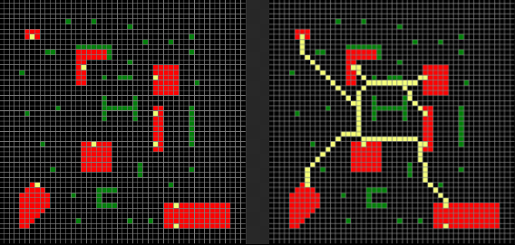

Concevoir un modèle n'est pas chose facile
Avant de nous lancer dans des recherches poussées sur la conception de notre interface graphique, nous avions dans l'idée de créer quelque chose de très interactif, ou l'utilisateur n'aurait qu'à placer directement sur l'interface ses bâtiments et obstacles potentiels et lancer la simulation.

Nous avons cherché dans la littérature quel modèle déjà existant se rapprochait le plus de ce que nous voulions et plusieurs d'entre eux se sont démarqué des autres:
L'algorithme de Prim: Pour en savoir plus cliquez ici.
L'algorithme de Kruskal: Pour en savoir plus cliquez ici.
Arbre couvrant de poids minimal: Pour en savoir plus cliquez ici.
C'est finalement plutôt vers ce dernier que nous nous sommes tournés. En effet, c'est celui ci qui imitait au mieux le comportement du blob et qui nous permettait d'obtenir les chemins les plus optimaux.
Afin de mieux comprendre comment nous devions procéder nous avons fait appelle à Jeff Jones, un professeur ayant déjà modélisé le comportement du blob avec un algorithme d'arbre couvrant de poids minimal. Ce dernier a accepté de nous venir en aide et à été d'une aide précieuse pour réaliser le code de notre interface.